01 / Discover
Find blueprints to learn new drawings. Story introduces tools as you progress; other modes have their own unlock rules.

GAME GUIDE / DRAWING ADVENTURE
Draw your way through.
A first-person adventure where your sketches become tools, weapons, and new ways forward.

A guide to the current development version. Mechanics and balancing may change as the game grows.
What if the thing you needed was only a sketch away? Project Pencil is a first-person drawing adventure where recognizable shapes become real objects in the world. Discover blueprints, bring your drawings to life, and use them to explore and survive.
Start with the five-step Tutorial, then enter The Missing Author story chapter or try multiplayer.
Find blueprints to learn new drawings. Story introduces tools as you progress; other modes have their own unlock rules.
Select your pencil with F. Hold left click and trace a recipe shape. Release and pause for half a second to finish. Close-together strokes combine into one drawing.
A recognized recipe creates an object. Each successful creation uses 25 drawing energy, which recovers over time.
Collect the object with E, then use it in the world. Draw weapons, protection, ammunition, and ways through the environment.
Recognition uses predefined recipes, rather than turning any image into an object. Moderate tilt and size variation are accepted. Open the guide with B and use V for the tracing outline. Z and X change the selected drawing. R cancels a sketch.
Swords, hammers, bows, and slingshots turn sketches into combat tools. Draw and collect ammunition separately; hold and release to fire a slingshot.
Hold an armor item and use it to equip it. Discover equipment such as helmets, armor plates, quivers, and pouches.
Draw a Door to progress through cleared Story dungeons. World doors and holes are temporary; their placement determines where they open.
Use the four-slot hotbar and eight-slot Backpack. The pencil stays in slot 1. Click two Backpack slots to swap their contents.
Follow a five-map chapter through The Workshop → The Stacks → The Foundry → The Glasshouse → The Observatory. Collect the first Sword and Door blueprints in the Workshop, then draw your way into the dungeons.
Clear enemies, defeat each guardian, and complete the tool trial before drawing the exit Door. Named maps act as checkpoints. Later areas introduce more tools, leading to the rooftop final encounter at the Observatory.
The four dungeon guardians are the Crypt Ogre, Archive Widow, Foundry Toad King, and Glasshouse Reaper. The final rooftop enemy is the Last Eraser, an airborne moth that attacks with volleys and calls guards below half health.
Learn the drawing system, then follow The Missing Author through its connected maps and dungeons.
Team up to defend the Spark in cooperative combat. Drawing and preparation help your group survive.
Fight in teams with starting floors assigned between the ground level and rooftop.
Be the last survivor in five connected map sections. The safe zone contracts, with no respawns. Eliminated players spectate.
Multiplayer offers local-network and online rooms in configured builds. Everyone needs a matching game version, and the host must stay connected.
All 30 drawable recipes, plus your permanent Pencil. The names and descriptions below follow the in-game recipe guide. Blueprint availability depends on the mode and your progress.
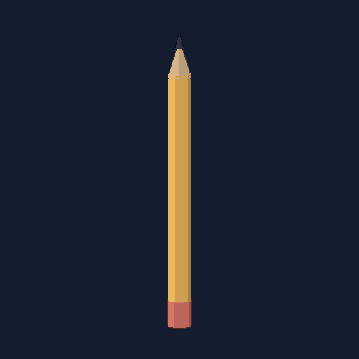
Your one permanent tool. Draw an idea into existence.
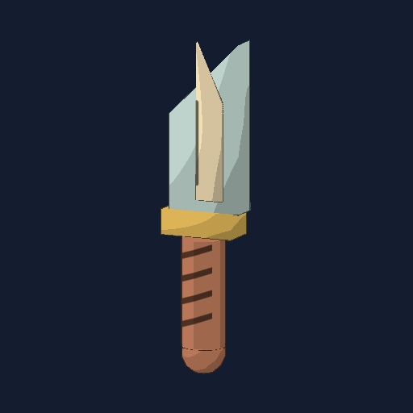
Quick, close-range strikes.
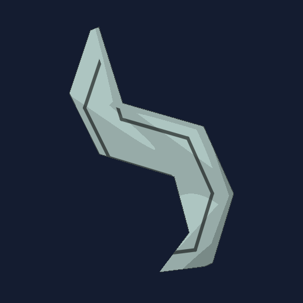
A hooked blade for quick slashes.
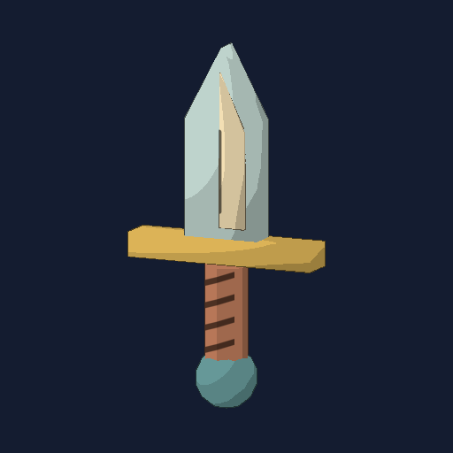
Draw a triangle on top and one straight line below for the handle. A quick primary slash.
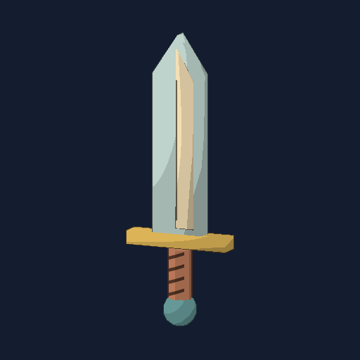
A balanced blade. Left: slash. Right: smash.
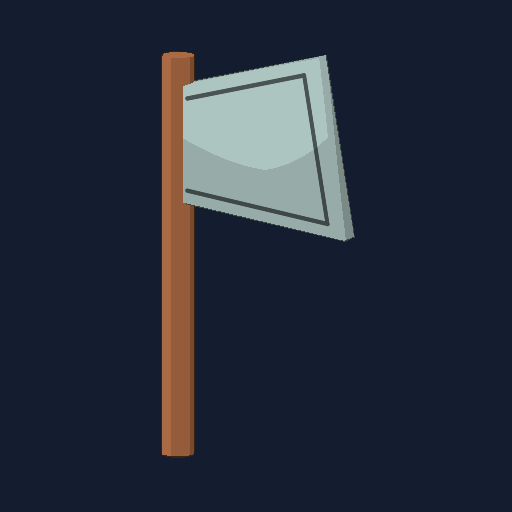
Heavy blows with a slower recovery.
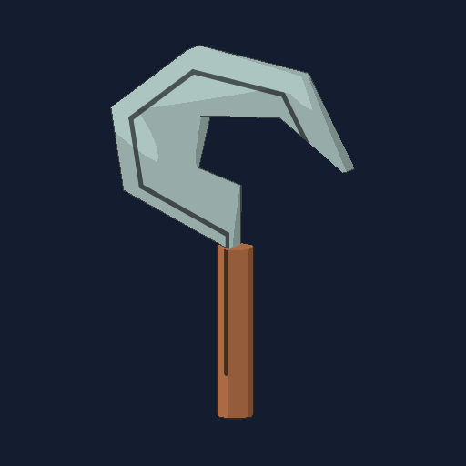
A curved harvesting blade.
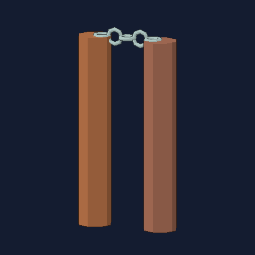
Two colored handles connected by a chain.
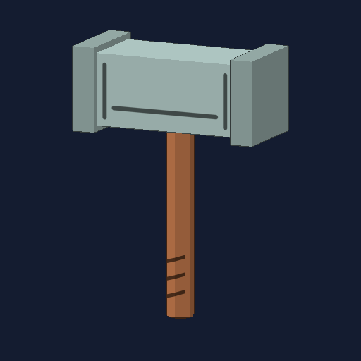
A heavy overhead smash.
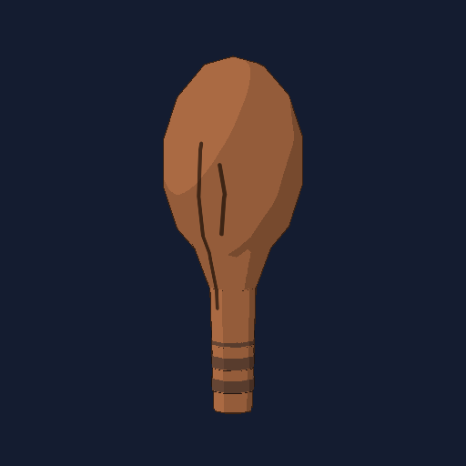
A simple blunt weapon.
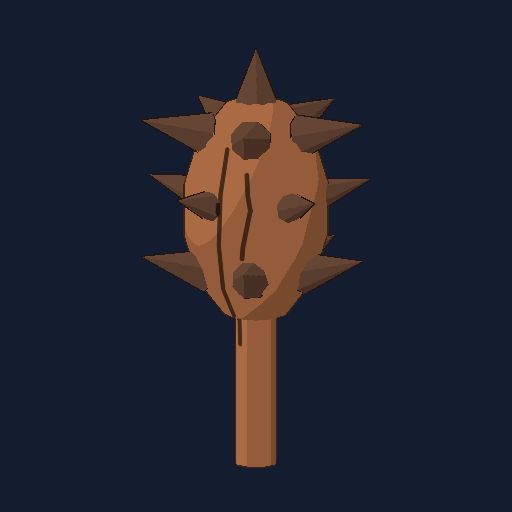
A wooden club with short thorns around its rounded head.
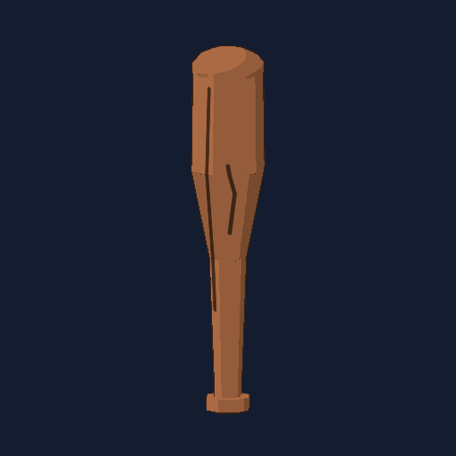
A round wooden bat with a narrow grip. Long reach and a broad swing.
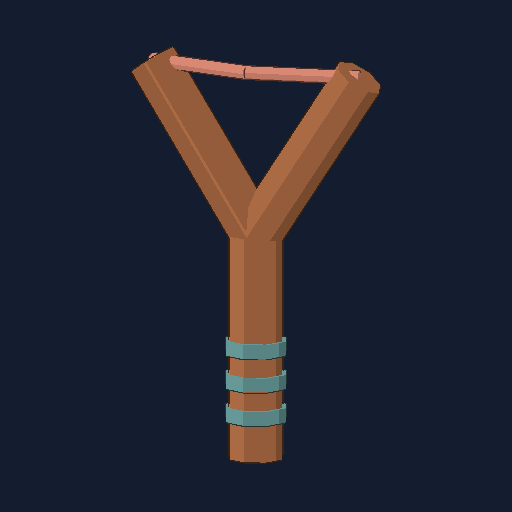
Consumes marbles from your backpack.
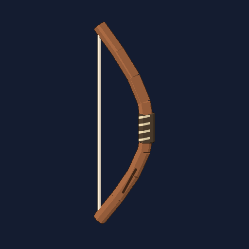
Draw a D in one stroke. Uses arrows drawn separately.
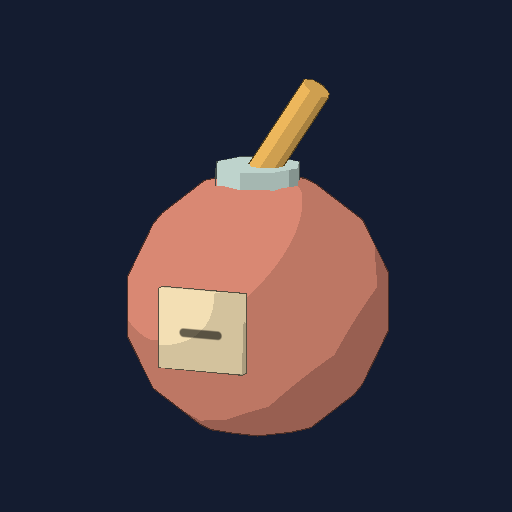
Throw to light a three-second fuse.
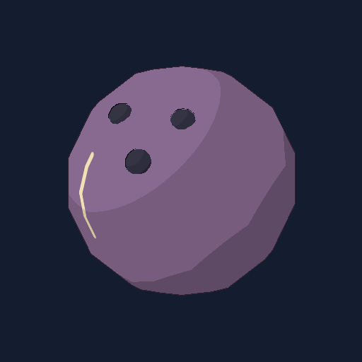
Falling speed increases impact damage.
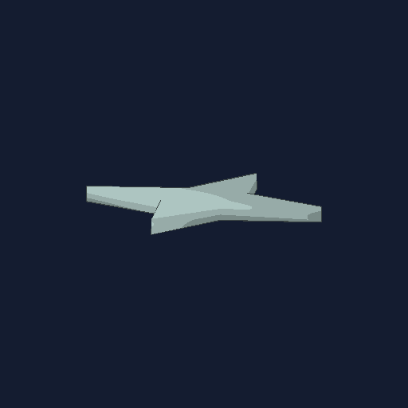
Draw a four-point star or a simple cross. Spins and sticks to solid surfaces.
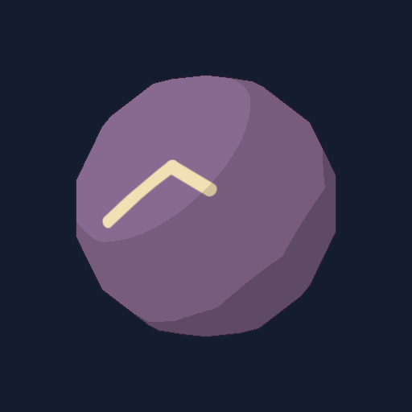
Adds one marble to your backpack.
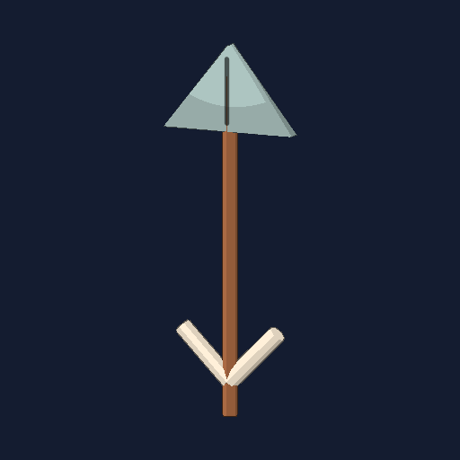
Draw a straight shaft and both sides of an open arrowhead. No tail feathers needed. Adds one arrow.
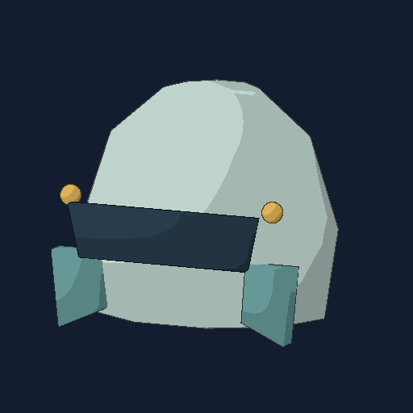
Equip for 15 armor points.
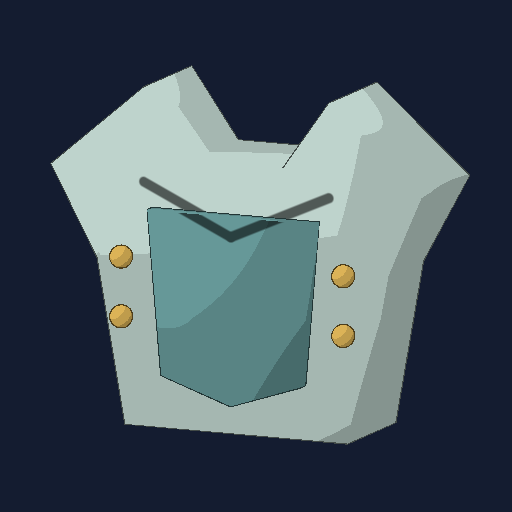
Equip for 35 armor points.
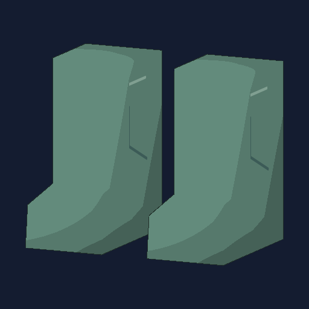
Equip for 15 armor points.
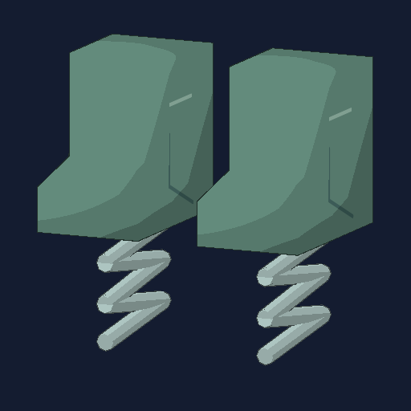
Five high jumps with no fall damage, then becomes normal boots.
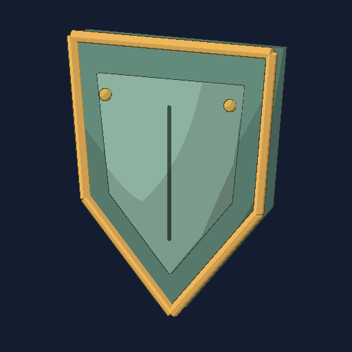
Push enemies back without damage. Stow on your back to use other items.
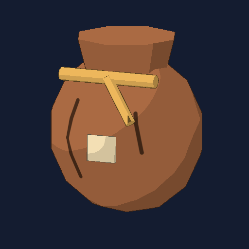
Draw a vase outline with a narrow neck and wide, rounded body. Equip to carry up to 20 marbles.
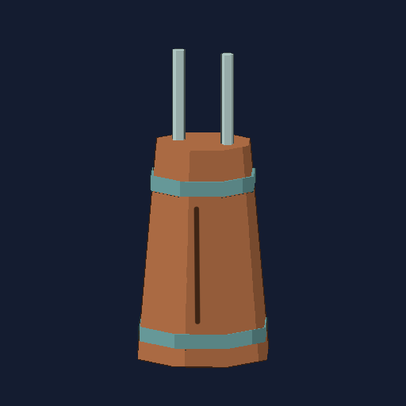
Equip to increase arrow storage from 1 to 20.
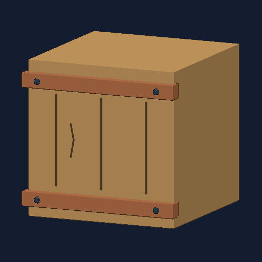
Draw a square. A solid step or barricade lasting two minutes.
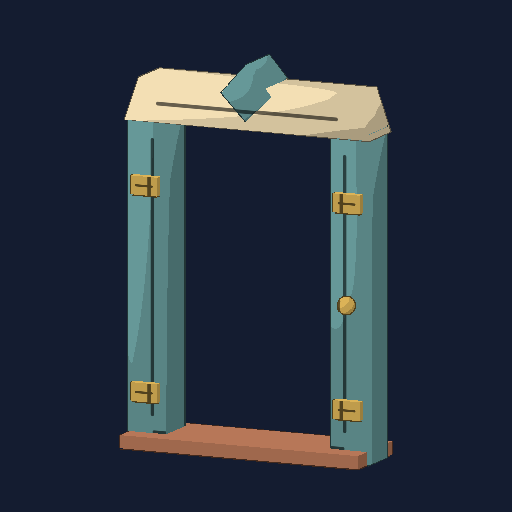
Draw a rectangle with a small circle inside for the doorknob. Draw near the wall bottom; both doors snap to the floor.
Draw a circle with an X on a floor or wall within 12 feet. Wall holes pass thrown items but block players. Size follows your drawing; ground floors become pits.
Enable Secret recipes in Settings to reveal their drawing guides.
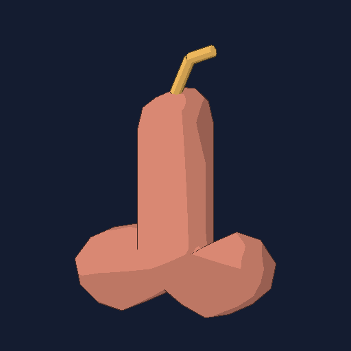
An optional sticky explosive. It sticks on impact; drawing size controls the blast radius.
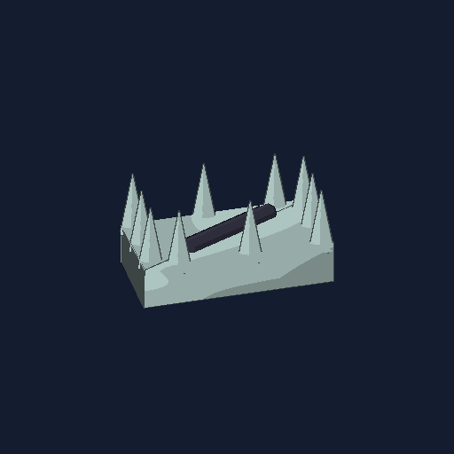
An optional drawn trap, available through the Secret recipes setting.
Meet the seven base enemy types. Health and damage can vary by encounter, so this field guide focuses on attack patterns.
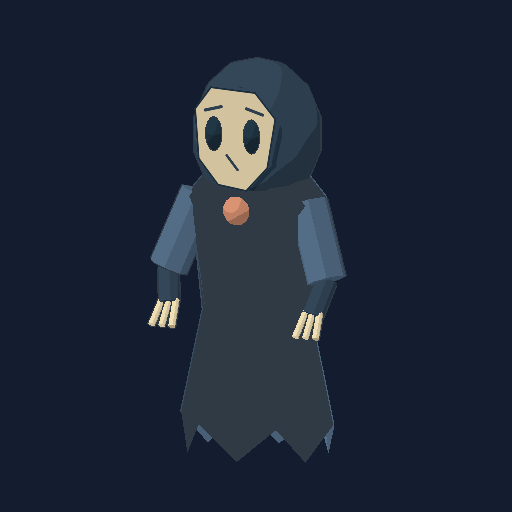
MELEE PURSUER
Closes the distance and attacks at close range. Keep moving and watch its windup.
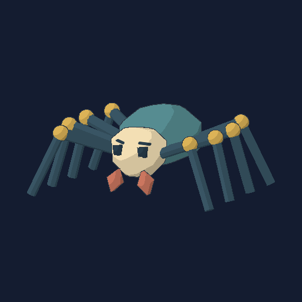
FAST LUNGE
A faster, smaller enemy that lunges during its attack. Make room before it commits.
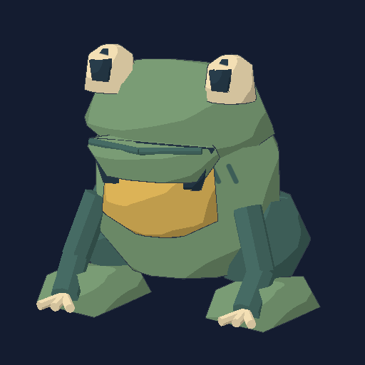
RANGED SPITTER
A slower creature that fires a ranged shot. Break its line of sight or move out of the projectile’s path.
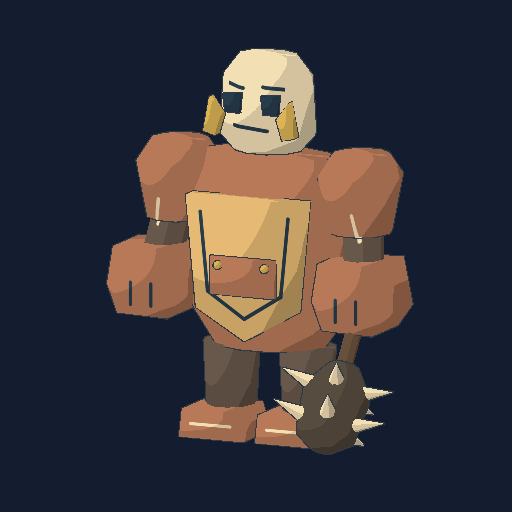
HEAVY AREA SLAM
A tougher melee creature with a ground slam. Get clear of the impact area during the warning.
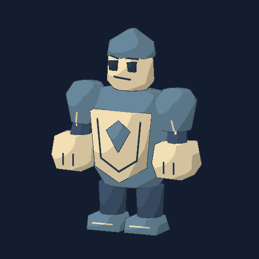
AREA SLAM
A sentinel that uses the heavy slam attack. Its reach makes standing beside it risky.
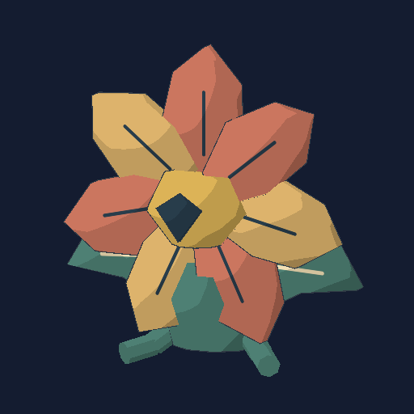
THREE-SHOT VOLLEY
Fires three spread projectiles. Use cover and avoid the fan of shots.
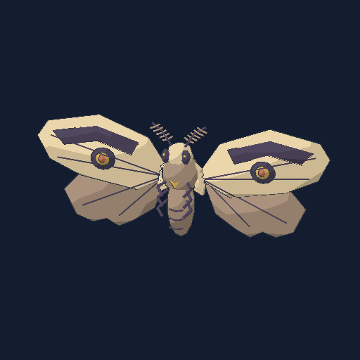
FLYING FINAL BOSS
An airborne moth that attacks with volleys and calls guards below half health in Story. The rooftop repeaters offer another way to fight back.
These four dungeon guardians lead to the Last Eraser rooftop encounter.
| Key / input | Action |
|---|---|
| W A S D / Mouse | Move / look |
| Shift / Space / C | Sprint / jump / crouch |
| F | Select the pencil |
| Hold left click | Draw with the pencil; use the selected item otherwise |
| B / V | Recipe guide / tracing outline |
| Z / X | Previous / next drawing shape |
| R | Cancel drawing |
| E | Pick up objects and collect blueprints |
| 1–4 / Mouse wheel | Select hotbar slot |
| Tab / Q | Backpack / drop item |
| T | Hold for proximity voice, when enabled |
| Escape | Pause |
The game recognizes a catalog of 30 predefined recipes. Your sketch must match a known shape; it is not an unrestricted image-to-object system.
Check that you know the blueprint, have enough drawing energy, and followed its shape. Release the mouse and give the game half a second to recognize it.
Visit Just Poly Games on itch.io for the studio’s updates and available projects.